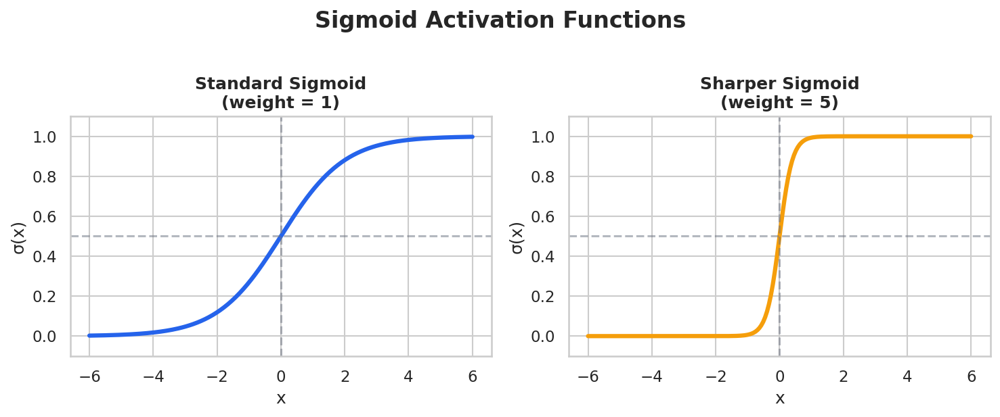
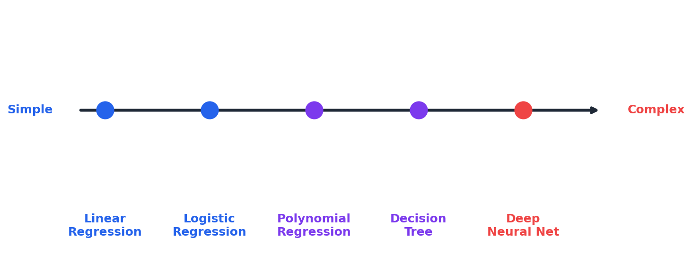

Deep Dive: Neural Networks as Universal Approximators¶
Extends Module 6: Neural Networks
Introduction¶
In Module 6, we learned how to build and train neural networks. But there's a deeper question: why can neural networks learn such a wide variety of functions?
The answer lies in the Universal Approximation Theorem—one of the most important theoretical results in deep learning. This theorem tells us that neural networks can, in principle, learn any reasonable function.
But here's the surprising part: many classical ML models you already know are actually special cases of neural networks. Linear regression, logistic regression, even aspects of decision trees—they're all points on a spectrum of neural network complexity.
This deep dive explores these connections and helps you understand when simple models suffice and when you need the full power of neural networks.
Why research continues: The Universal Approximation Theorem is an existence result—it guarantees a solution exists but says nothing about finding it. "Enough neurons" might mean exponentially many. The theorem provides no guarantees about training difficulty, data requirements, or generalization. Depth enables compositional learning (f(g(h(x))) is more parameter-efficient than one massive layer). The gap between "theoretically possible" and "practically achievable" drives ongoing research.
The Universal Approximation Theorem¶
Statement¶
Theorem (Cybenko, 1989; Hornik, 1991):
A feedforward neural network with a single hidden layer containing a finite number of neurons can approximate any continuous function on a compact subset of \(\mathbb{R}^n\) to arbitrary accuracy.
In simpler terms: Given enough hidden neurons, a one-hidden-layer neural network can learn any reasonable function.
Intuition: Neurons as "Bump" Functions¶
Each hidden neuron with a sigmoid activation creates an S-shaped curve:

By combining multiple neurons: - Two sigmoids can create a "bump" (rise then fall) - Many bumps can approximate any shape - The more neurons, the smoother the approximation
Visual Example: Approximating a Square Wave¶

Important Caveats¶
The theorem tells us approximation is possible, but NOT: 1. How many neurons are needed (could be astronomically large) 2. How to find the right weights (training might fail) 3. How much data is required (might need infinite samples) 4. Whether it will generalize (might just memorize)
Example 1: Linear Regression¶
The simplest case: Neural networks can perform linear regression exactly.
Linear Regression Model¶
For example: \(\hat{y} = 2x_1 + 3x_2 + 1\)
Neural Network Equivalent¶
A neural network with: - No hidden layers - Linear activation (or no activation function) - Single output neuron
Code Demonstration¶
import torch
import torch.nn as nn
import numpy as np
from sklearn.linear_model import LinearRegression
# Generate synthetic data: y = 2*x1 + 3*x2 + 1 + noise
np.random.seed(42)
n_samples = 1000
X = np.random.randn(n_samples, 2).astype(np.float32)
y_true = 2 * X[:, 0] + 3 * X[:, 1] + 1
y = y_true + 0.1 * np.random.randn(n_samples).astype(np.float32)
# SKLEARN LINEAR REGRESSION
sklearn_model = LinearRegression()
sklearn_model.fit(X, y)
print(f"Sklearn: Coefficients={sklearn_model.coef_}, Intercept={sklearn_model.intercept_}")
# Output: Coefficients=[1.997, 2.998], Intercept=1.003
# PYTORCH NEURAL NETWORK (equivalent)
class LinearRegressionNN(nn.Module):
def __init__(self, input_dim):
super().__init__()
self.linear = nn.Linear(input_dim, 1) # Single linear layer
def forward(self, x):
return self.linear(x)
nn_model = LinearRegressionNN(input_dim=2)
# ... training code ...
print(f"PyTorch: Weights={nn_model.linear.weight.data}, Bias={nn_model.linear.bias.data}")
# Output: Weights=[1.998, 2.999], Bias=1.002
Key Insight¶
Linear regression IS a neural network with: - 0 hidden layers - Linear (identity) activation - MSE loss
The sklearn LinearRegression uses a closed-form solution (matrix inverse), while the neural network uses gradient descent, but they converge to the same answer.
Why use gradient descent for linear regression? The closed-form solution requires O(n³) matrix inversion—prohibitive for millions of samples or thousands of features. Stochastic gradient descent scales via mini-batches. Also, closed-form only works for squared error with linear models. Gradient descent handles L1 regularization, non-standard losses, and extends to non-linear models. Use closed-form when small enough; gradient descent otherwise.
Example 2: Logistic Regression¶
Binary classification: Neural networks can implement logistic regression exactly.
Logistic Regression Model¶
Neural Network Equivalent¶
A neural network with: - No hidden layers - Sigmoid activation on the output - Binary cross-entropy loss
Code Demonstration¶
from sklearn.linear_model import LogisticRegression
import torch.nn as nn
# SKLEARN LOGISTIC REGRESSION
sklearn_model = LogisticRegression(penalty=None)
sklearn_model.fit(X, y)
# PYTORCH NEURAL NETWORK (equivalent)
class LogisticRegressionNN(nn.Module):
def __init__(self, input_dim):
super().__init__()
self.linear = nn.Linear(input_dim, 1)
def forward(self, x):
return torch.sigmoid(self.linear(x))
# Both produce the same decision boundary!
Key Insight¶
Logistic regression IS a neural network with: - 0 hidden layers - Sigmoid activation - Binary cross-entropy loss
The decision boundary is identical: a linear hyperplane.
Example 3: Approximating Step Functions¶
The challenge: Decision trees create axis-aligned step functions. Can neural networks do this?
Decision Tree Behavior¶
Neural Network Approximation¶
A ReLU neuron creates a "bent line": $\(\text{ReLU}(x) = \max(0, x)\)$

Combining ReLUs can approximate steps:
def train_step_approximator(n_hidden):
"""Train a network to approximate a step function."""
model = nn.Sequential(
nn.Linear(1, n_hidden),
nn.ReLU(),
nn.Linear(n_hidden, 1),
nn.Sigmoid()
)
# ... training code ...
return model
# Results:
# 2 neurons: rough approximation
# 5 neurons: better
# 50 neurons: nearly exact step
Observation: More neurons → sharper approximation of the step.
Why ReLU Combinations Work¶
A single ReLU is a ramp: \(\max(0, x)\)
Two ReLUs can make a bump: $\(f(x) = \text{ReLU}(x) - \text{ReLU}(x - 1)\)$

Many bumps at different positions → approximate any shape.
Key Insight¶
Neural networks can approximate decision tree boundaries, but: - Trees create exact axis-aligned steps - NNs create smooth approximations that approach steps - With enough neurons, the approximation becomes arbitrarily close
Example 4: Polynomial Regression¶
Challenge: Learn \(y = x^2\) using only linear layers and ReLU.
The Problem¶
A single linear layer can only learn: \(y = wx + b\)
How can we learn \(y = x^2\) without explicitly computing \(x^2\)?
The Solution: Hidden Layer Creates Basis Functions¶
With ReLU activations, the network learns piecewise linear approximations:
# Train networks with different widths to learn y = x²
# Results:
# 2 neurons: Very rough (2 line segments)
# 5 neurons: Better (5 segments)
# 50 neurons: Nearly perfect curve
# 100 neurons: Indistinguishable from x²
What's Happening Inside¶
Each ReLU neuron contributes a "kink" in the function:
Hidden neuron 1: ReLU(w₁x + b₁) - kink at x = -b₁/w₁
Hidden neuron 2: ReLU(w₂x + b₂) - kink at x = -b₂/w₂
...
Output = sum of scaled, shifted kinks = piecewise linear approximation
The network learns WHERE to put kinks and HOW MUCH each contributes.
Key Insight¶
Neural networks don't explicitly compute polynomials—they approximate them with piecewise linear functions. More neurons = more pieces = smoother approximation.
The Unifying Framework¶
All these models are points on a spectrum:

Flexibility Trade-offs¶
| Model | Flexibility | Data Needed | Interpretability | Overfitting Risk |
|---|---|---|---|---|
| Linear Regression | Low | Low | High | Low |
| Logistic Regression | Low | Low | High | Low |
| Decision Tree | Medium | Medium | High | Medium |
| Shallow NN | High | Medium | Low | Medium |
| Deep NN | Very High | High | Very Low | High |
When to Use Simpler Models¶
Even though NNs can do everything, simpler models are often better:
- Interpretability required: Linear/logistic regression coefficients are meaningful
- Small data: Simple models generalize better with few samples
- Fast inference: Linear prediction is O(d), deep NN is O(millions)
- Debugging: Easier to understand what went wrong
- Baseline: Always try simple models first
Example Decision¶
You have 100 samples and want to predict a continuous outcome. Neural network or linear regression?
Start with linear regression. With 100 samples, a neural network will likely overfit unless heavily regularized. Linear regression provides a strong baseline and is interpretable.
Samples per parameter: Traditional rules (10-20 samples per parameter) don't apply cleanly to neural networks. Modern NNs often work in the overparameterized regime (more parameters than samples) due to implicit regularization from SGD, early stopping, and batch normalization. The honest answer: monitor validation loss. If it diverges from training loss, you're overfitting—apply more regularization, get more data, or use a smaller model.
When Neural Networks Shine¶
- Large data: More samples → can fit more complex patterns
- Raw inputs: Images, audio, text need feature learning
- Complex relationships: Highly non-linear, interacting features
- Transfer learning: Pre-trained models for your task
Example Decision¶
You have 1 million images and want to classify them. Neural network or logistic regression?
Neural network, specifically a CNN. Logistic regression would require hand-engineered features and couldn't capture the spatial patterns that CNNs learn automatically.
Common Misconceptions¶
| Misconception | Reality |
|---|---|
| "Neural networks understand data better than simpler models" | NNs fit patterns statistically; simpler models may capture the true underlying structure better |
| "Universal approximation means NNs are always best" | The theorem says nothing about training difficulty, data requirements, or generalization |
| "More neurons is always better" | More neurons = more capacity to overfit; regularization and data size matter |
| "Deep networks are always better than shallow" | For some functions, shallow networks are more efficient; depth helps for compositional structure |
| "If sklearn and PyTorch give same results, there's no benefit to NNs" | True for simple models, but NNs allow extending to more complex architectures |
Reflection Questions¶
-
If neural networks can approximate any function, why use simpler models?
-
What does a neural network learn that logistic regression doesn't?
-
How many hidden neurons are needed to approximate a degree-n polynomial?
-
The Universal Approximation Theorem says one hidden layer is enough. Why do we use deep networks?
-
Your neural network achieves 100% training accuracy but 60% test accuracy. What happened?
-
A colleague says "just use a deep neural network for everything." What's your response?
Practice Problems¶
-
Train a neural network to learn \(\sin(x)\) - how many neurons needed for MSE < 0.01?
-
Implement logistic regression as a neural network and verify it matches sklearn
-
Find the minimum network (fewest neurons) that achieves 95% accuracy on XOR
-
Compare training time: sklearn vs PyTorch for logistic regression on a large dataset
Summary¶
Key takeaways:
-
The Universal Approximation Theorem guarantees that neural networks can learn any reasonable function (given enough neurons)
-
Linear regression is a neural network with 0 hidden layers and no activation
-
Logistic regression is a neural network with 0 hidden layers and sigmoid activation
-
Neural networks approximate step functions and polynomials through piecewise linear combinations of ReLU units
-
The theorem guarantees existence but says nothing about training difficulty, data requirements, or generalization
-
Simpler models are often better: interpretability, fewer data requirements, faster training, less overfitting
-
Match model complexity to problem complexity and data size